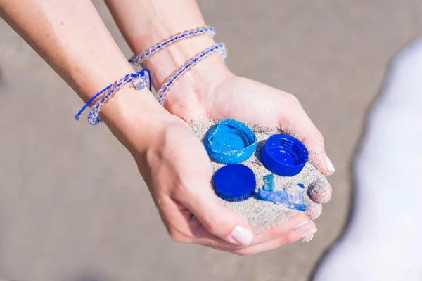

At Ocean Motion, we strive to educate people on pollution and the effects it has on our Ocean. 8 million tons of plastic goes into the ocean every year, and this needs to come to an end. We sell bracelets made from 100% recycled material that came straight out of the Ocean to raise funds to be able to continue removing trash and pollution from the Ocean. Let's take back control over what goes into the ocean together!
